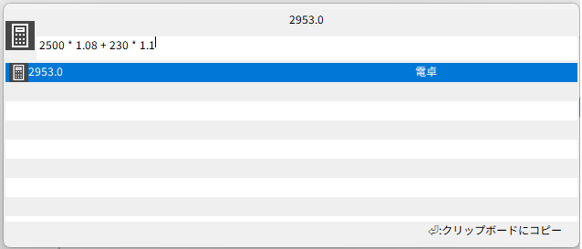
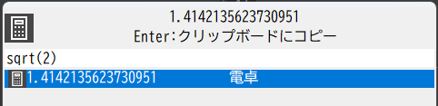
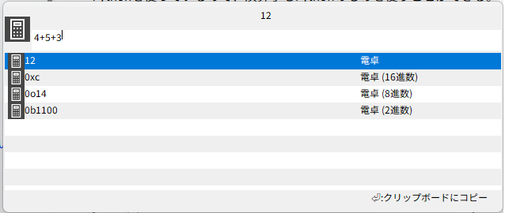
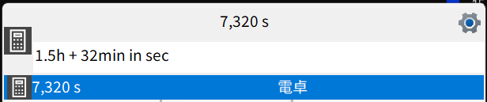

電卓
簡易電卓機能
入力欄に数式を入れると、計算結果をコメント欄に表示する。
Enterキーを押下すると、計算結果をクリップボードにコピーできる。
簡易電卓機能を利用するにはPython(3.12以降)が必要。(設定画面)

簡易電卓機能で利用可能な演算子
演算子 |
意味 |
|---|---|
+ |
加算 |
- |
減算 |
* |
乗算 |
/ |
除算 |
// |
切り捨て除算 |
** |
べき乗 |
<<,>> |
シフト演算 |
% |
剰余 |
& |
AND |
| |
OR |
^ |
XOR |
関数
その他、Python標準関数のうち、計算結果が文字列/数値になるものと、mathモジュールの関数を使用することができる。

基数別表示
計算結果が整数になる場合は、2進数/8進数/10進数/16進数それぞれの結果が表示される。

一つ目の項の基数を優先して表示する。
例えば、0x10+1という式の場合、16進数の結果(0x11)が先に表示される。
単位付き計算機能
単位付きの数値を含む式を入力すると、単位を考慮して計算結果を表示する。

単位付き計算機能では、例えば次のような式を入力できる。
1 h + 30 min1 MB + 512 KB10% + 5%
in xxxとすると表示単位を明示できる
1 h + 30 min in seconds32MB + 0.5 GB in MB
対応している単位は次のとおり。
時間
year,month,week,day, hour,min,second,millisecond,nanosecond`quarters(四半期)
ビット単位
Bit、Kb、Mb、Gb、Tb、Pb、EbKib、Mib、Gib、Tib、Pib、Eib
バイト単位
Byte、KB、MB、GB、TB、PB、EBKiB、MiB、GiB、TiB、PiB、EiB
パーセント
%
長さ
km,m,cm,mm,um,nm,pminch,points
速度
長さと時間の組み合わせで速度を表現する。
km/h,m/sinch/sなど
単位付き計算機能で利用可能な演算子
「簡易電卓機能」と「単位付き計算機能」は別物であり、使用できる演算子が異なる。
演算子 |
意味 |
|---|---|
+ |
加算 |
- |
減算 |
* |
乗算 |
/ |
除算 |